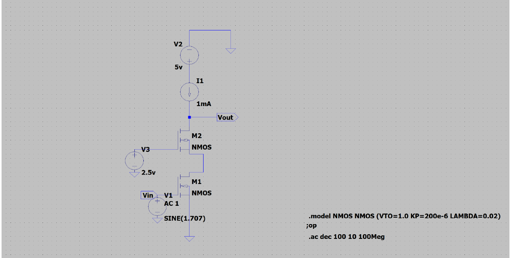
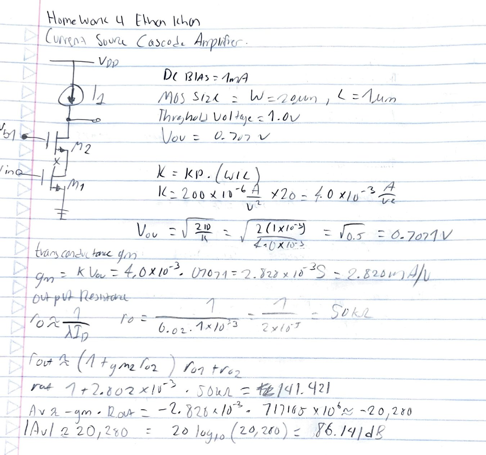

An NMOS cascode amplifier using an active current-source load in place of a resistive one. Swapping the load raises output resistance by orders of magnitude, and gain rises with it.
| Quantity | Value |
|---|---|
| Device sizing | \(W = 20\ \mu\mathrm{m}\), \(L = 1\ \mu\mathrm{m}\) |
| Bias current | \(I_D = 1\ \mathrm{mA}\) |
| Transconductance (hand-calculated) | \(g_m = 2.83\ \mathrm{mS}\) |
| Output resistance per device | \(r_o \approx 50\ \mathrm{k\Omega}\) |
| Amplifier output resistance | \(\approx 7.2\ \mathrm{M\Omega}\) |
| Voltage gain | \(86\ \mathrm{dB}\) |
Transconductance and output resistance were hand-calculated from SPICE Level-1 model parameters (\(K_P = 200\ \mu\mathrm{A/V}^2\), \(V_T = 1.0\ \mathrm{V}\), \(V_{ov} = 0.707\ \mathrm{V}\)) before simulating, then gain and bandwidth were verified against LTspice AC analysis from 10 Hz to 100 MHz.

Hand analysis
